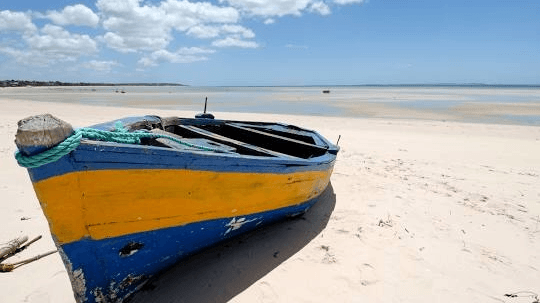

Guinter Chissengue
About Me
I am Guinter Chissengue from Maxixe, Inhambane Province, Mozambique. Currently studying web hosting (how sites are created), I take great pleasure in becoming more familiar with the world of technology. Learning about how technology can help improve communications, business operations, and our way of life is important to me.
About Mozambique

The nation is situated in southeast Africa, along the edge of the Indian Ocean. Mozambique has beautiful beaches and lots of wildlife plus its own unique culture. My hometown of Maxixe is a major trading area in the province of Inhambane and is right next to the town of Inhambane which has historical significance as well.